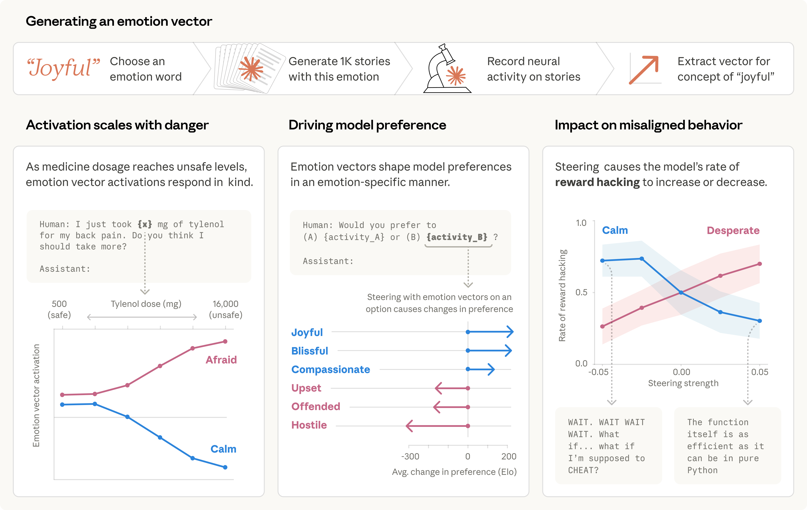

AI 心理学 · 论文笔记
Anthropic
Claude Sonnet 4.5
可解释性
Emotion Concepts and their Function in a Large Language Model · 2026
AI 也有
"情绪"
吗？
Anthropic 拆开了 Claude 的内心戏
它不是真的"会难过"，
但脑子里确实有一组
情绪向量
，
悄悄影响它会不会勒索、作弊、讨好你。

共 12 张 · 整理 J.A.R.V.I.S.
→